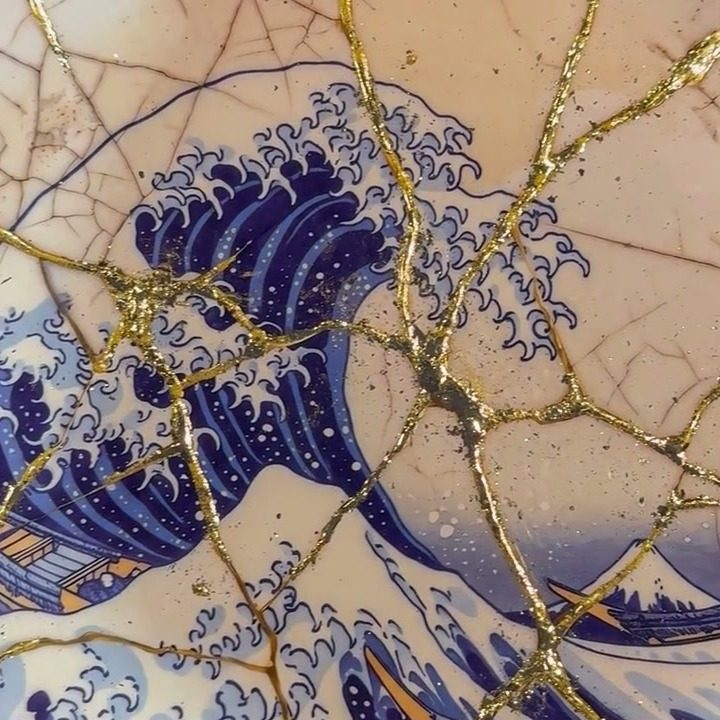

Kintsugi: what the art of golden repair means, and my wave with golden cracks
By William San, on

Kintsugi is a Japanese technique that repairs broken ceramics by picking out the cracks in gold instead of hiding them. The word says as much: kin, gold, and tsugi, joining. It is also the name of a series I make under the Popsan signature. Its best-known piece is a Great Wave off Kanagawa, which I presented at the art3f fair in Monaco in September as the finest work on the stand.
There is a difference between the kintsugi of Japanese workshops and mine, and I would rather say it straight away: my tiles have never been broken. The cracks are chosen, not suffered.
Where kintsugi comes from
The story goes that in the late fifteenth century the shogun Ashikaga Yoshimasa sent a cracked tea bowl back to China to be mended. It came back held together with heavy metal staples, and Japanese craftsmen are said to have looked for a more beautiful repair. It is a legend that nobody can prove, but it captures the spirit of the technique.
The traditional method is slow. The pieces are joined with urushi, a lacquer made from tree sap, applied in several coats that each have to harden; the last one is dusted with powdered gold. Urushi does not dry in open air: it hardens in a humid atmosphere, and a single repair can take several weeks. Kintsugi grew up around the bowls of the tea ceremony, and it is linked to wabi-sabi, the idea that an imperfect or worn object keeps a value of its own.
Restorers tell several methods apart. The simplest follows a hairline crack with a stroke of gold. When a chip is missing, it is rebuilt in lacquer and then gilded whole. The most surprising, yobitsugi, fills the gap with a fragment from another bowl, in another colour, so the mended object carries two histories at once.
What kintsugi means
The whole meaning lies in a refusal: the refusal to hide the accident. An ordinary repair tries to make you forget the break. This one covers it in gold and makes it the main drawing on the object, so the line of the break becomes the first thing you look at.
That is why the word has left the ceramics workshop. People now use it for someone who recovers from a hard time without erasing what they went through.
A wave that was never broken
For this piece I started from an image everyone knows: The Great Wave off Kanagawa, which Hokusai made in the early 1830s. I decided to turn it into something of my own in the language of kintsugi. The wave covers a ceramic tile, 30 × 30 cm, which gives it its shine, and the cracks running through it are highlighted by hand in gold.

The cracks do not follow the chance of a blow. I decide where they go: on the wave they run through the foam and the hollow of the breaker, and one of them passes close to Mount Fuji, tiny on the horizon.

So on the stand I presented it for what it is: a depiction of kintsugi, not a repair.
Each tile measures 30 × 30 cm and comes framed; the wave in Monaco was in a black and gold frame. A piece costs €750. The series has seven tiles, shown (in French) on the Kintsugi page of Atelier Joconde, the family gallery.
In my work, Popsan looks for light in the shadow of a face, as in Akari, painted on a black background. Kintsugi looks for it in a crack.